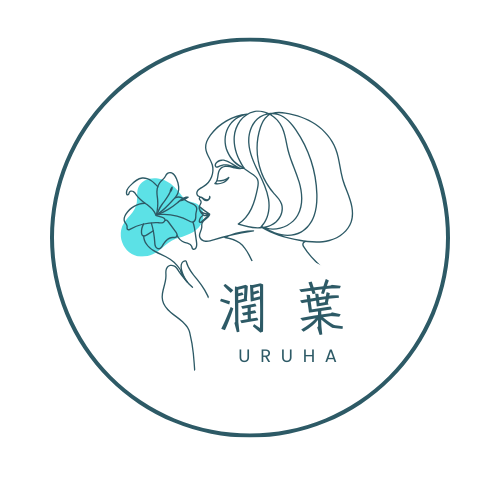

鑑定士 潤葉について
私が四柱推命と深く関わるようになったのは、仕事と家庭、そして子育てのすべてに手いっぱいになり不安に駆られていた時期でした。当時、他の鑑定士の方にも相談しましたが、腑に落ちる言葉に出会うことができず「それなら自分で答えを見つけよう」と、手に取ったのが浅野太志先生の四柱推命の本でした。自分で自分の命式（人生の設計図）を見る作業を行う中で、浅野先生の解く自然派四柱推命の「奥深さ」「優しさ」そして「的中力」に強く惹かれました。
人生の困難な時期は、次に大きく羽ばたくための「大切な準備期間」であったと知り、深い安堵感と自己肯定感に包まれました。これが、私の鑑定士としての揺るぎない原点です。
その後、浅野太志先生の講座で学びを深め、これまでに多くの方々の命式を見させていただき、鑑定士としての活動をスタートさせました。
私の目指す「自然派四柱推命鑑定」は、五行（自然界のエネルギー）の流れを読み解き、運気を「良い・悪い」と単純に断じるのではなく「すべての時期に必要な学びと実践方法」を具体的に導き出すものです。
鑑定では運が開いていく具体的な道筋をお伝えし、「明日から頑張ってみよう」と思えるきっかけ作りを全力でサポートいたします。

🌿 自然派四柱推命とは
運気のサイクルを知る
自然と共にある、あなたの人生の羅針盤
運気に「悪い」時期はない
運気は季節の巡り。すべての時期に成長の種が隠されています。その意味と活かし方をお伝えし、未来への希望に変えます。

実践的な行動指針
単なる予測ではなく「今、何をすべきか」「こうすれば運が開ける」という具体的なアドバイスに特化しています。
お問い合わせ
鑑定のご予約やご質問は、下記のいずれかの方法でお気軽にお問い合わせください。